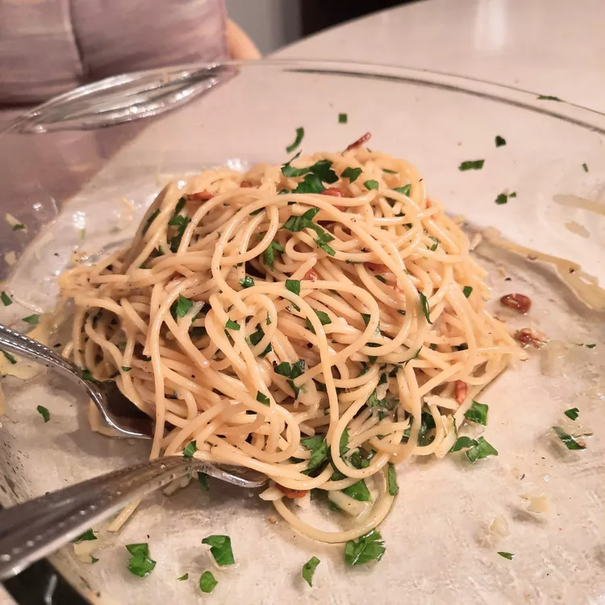

Spaghetti Aglio e Olio

Description
Spaghetti aglio e olio is a classic Italian dish, notable for its fragrance due to the use of garlic and olive oil. This recipe is a beginner-friendly way to recreate its authentic flavour.
Ingredients
- Spaghetti - 1 lb
- Oil - 1/2 cup
- Garlic - 6 cloves, thinly sliced
- Seasonings - red pepper flakes, black pepper, fresh parsley
- Cheese
Steps
- Boil the spaghetti.
- Toast the garlic in olive oil.
- Stir the seasonings into the pasta, then stir in the garlic and oil.
- Toss with cheese.